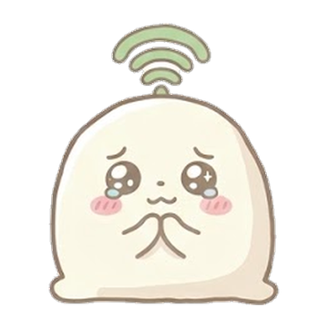
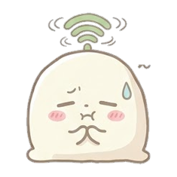
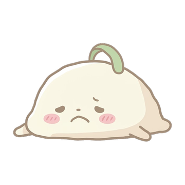

現役生版どこ高？
質問に答えるだけで
あなたがいま通っている高校を
AIが当てにいきます
学校名や名前を入力することはありません

待って、高校って全国に5,400校もあるんだけど…
正直、ここから当てるのはムリ。
ほんとにムリ。
でも10問で当てたい。
どうしても当てたい。
だから最初に、この2つだけ教えて…
おねがいします…！① 学校名は何文字？
読みがな
漢字
「高校」の前の部分だけ数えてね（「県立」「市立」は数えない）
・のばす「ー」や小さい「っ」「ゃ」も1文字
・「が」「ぱ」のような点つきの字も1文字
・カタカナは読みがなに数えて、漢字には入れない
・「・」は数えない
例1 岐阜北 → ぎふきた（読み4）・岐阜北（漢字3）
例2 函館ラ・サール → はこだてらさーる（読み8）・函館（漢字2）
例3 ノートルダム女学院 → のーとるだむじょがくいん（読み12→「10〜」）・女学院（漢字3）
・のばす「ー」や小さい「っ」「ゃ」も1文字
・「が」「ぱ」のような点つきの字も1文字
・カタカナは読みがなに数えて、漢字には入れない
・「・」は数えない
例1 岐阜北 → ぎふきた（読み4）・岐阜北（漢字3）
例2 函館ラ・サール → はこだてらさーる（読み8）・函館（漢字2）
例3 ノートルダム女学院 → のーとるだむじょがくいん（読み12→「10〜」）・女学院（漢字3）
② 学校はどの地方？
質問 3 / 10

わかった…！ あなたの高校は…
当たった〜！！
あなたの学校に +1点
この学校のあるある
あなたの学校のあるある、教えて！+3点
AIが「これはホント」と判断したら、この学校のあるあるに追加します
友だちにも試してもらう友だちが遊ぶと+2点

まちがわれたことをシェア
ここまでしぼれたんだけど…この中にある？
くやしい…！
書いてもいい人だけ、学校名を教えてね（AIが勉強するのに使います）
書いてもいい人だけ、学校名を教えてね（AIが勉強するのに使います）
教えてくれてありがとう！
次はぜったい当てられるように勉強します
あなたの学校に +1点
この学校のあるある
あなたの学校のあるある、教えて！+3点
AIが「これはホント」と判断したら、この学校のあるあるに追加します
友だちにも試してもらう友だちが遊ぶと+2点
学校パワーランキング
学校パワーのため方
・最後まで遊ぶと 1点
・シェアして友だちが遊ぶと 1人につき2点
・学校のあるあるを書くと 3点
・シェアして友だちが遊ぶと 1人につき2点
・学校のあるあるを書くと 3点
全体で100人をこえたら公開します
2人以上が参戦した学校だけをのせます
2人以上が参戦した学校だけをのせます
大人向けのどこ高？（卒業生版）もあるよ